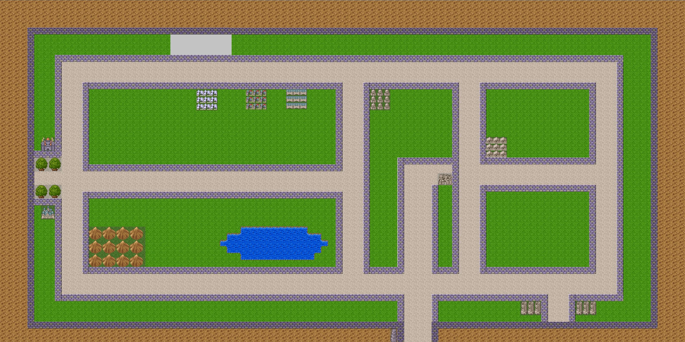
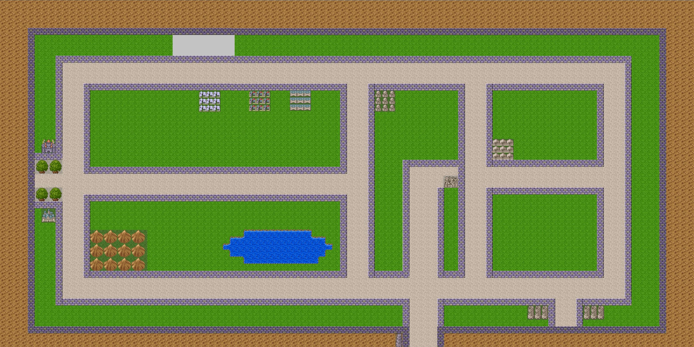

我當初都做好心理準備，要做其他題目了，結果meeting定題目的時候，被老師來了一句，「小柳，你不是要做遊戲嗎？怎麼還過來？」
我；「！！？」我怎麼都不知道題目已經被定好了！？那個機器人什麼的我很心動耶！
總之，陰錯陽差(？)下就變成這樣了。
不過跟v1比起來，v2變成以小遊戲為主的RPG了。
先來放一張當初成發的海報，當時找不到背景圖，還三更半夜的敲我家花爺問資源。
再來畫個大餅，其實本來我的完整預想是可以做成這樣的...
↓理想是豐滿的，現實是骨幹的...
↓來對比一下這張v1的構想，兩者相比，之前真的是趕鴨子上架...
↓來對比一下這張v1的構想，兩者相比，之前真的是趕鴨子上架...
好，其實上面兩張圖不重要，重要的是遊戲的內容，先來介紹一下故事情節。
因為對於畢業的怨念，所以這個遊戲就是要找到十九個NPC，和他拿「記憶的碎片」，當收集齊十九個「記憶的碎片」後，就可以得到畢業證書，反之，沒有蒐集齊全的話，很不幸的，你必須延畢。
至於為什麼是這個劇情，這是來自於編劇深深的詛咒。
據說當年編劇老是和大他一屆的學姊們混，有一天，編劇在教學樓遇到他的修課老師。
老師問他什麼時候畢業，編劇一時忘記自己的身分，就說快了。
結果被老師狠狠地吐槽，你不是還要一年多？
編劇差點哭奔，後來和他的學姐們說這件事的時候，還被狠狠的嘲笑了QQ
言歸正傳，這回的主角不是小電機了，而是一個普通的大學生─西貝，是的，就是假貨。
但是很可惜的，我們並不會看到他，因為我懶的話(其實是不會畫啦！
在假貨...啊！不是，在西貝知道要去圖資集合的時候，他在大地圖上遇到了小電機。
↓後來沒有美術神經的陌阿柳趕工出來的高雄大學大地圖

然後兩個人被狗追，這裡是個小遊戲，我們必須操控西貝和他的小夥伴們幹掉野狗逃出去。
這邊的遊戲方式採用和上次的半即時制不同，是採用即時制，我們可以隨時操控攻擊和走向。
↓這個小遊戲必須操控上下左右鍵和Space鍵來閃躲野狗的攻擊和打野狗，使用Tab鍵則是可以換武器，當初的構想是不同的人有不同的武器(所以根據領頭人會更換不同的武器)
↓但是相較於前做，這邊要注意的是...我終於讓他們一個接著一個地走啦！所以只要一個人被打到就GG了，所以要特別注意後面的人，他會踏在他前面那個人原本的地方

↓但是相較於前做，這邊要注意的是...我終於讓他們一個接著一個地走啦！所以只要一個人被打到就GG了，所以要特別注意後面的人，他會踏在他前面那個人原本的地方
西貝和他的小夥伴逃離了兩三群野狗之後，一路往圖資大樓進發，一路上收集「記憶的碎片」，結果發現西貝忘記帶學生證，進不去圖資，由於路上被傳設拜託去摘十朵花，所以他們決定先摘花之後再回去。
當他們到達觸發點的時候，西貝會提醒我們到了，然後進入摘花的小遊戲，說是摘花其實不太對，應該說接花才對，因為花朵會一直掉落，同時與它一起落下的還有鳥大便。
相較於前面打野狗時是橫向的的攻擊和平面的移動，摘花的時候我們是直向掉落花朵和鳥大便與橫向的移動，也就是只能用左右鍵來操控，另外Space鍵可以做跳躍的動作。
而跟被野狗攻擊馬上Game Over不一樣的是...我們有五條命，每當被鳥大便打到，就會扣掉左上角的一顆心。
↓這個小遊戲則是以左右鍵和Space鍵為主，並且有五次機會可以扣。
之後一路往回走，走到一半的時候得知大樓的水管破掉了，身為電機系的西貝自告奮勇的說要接水管，必經身為電機系怎麼可以不會接水管(X)。
所以我們就去運健休大樓幫修理水管，當我們踏上運健休大樓的時候，最後一個小遊戲就被觸發了，這是一個接水管的遊戲，但由於沒有美術天分的我只有做出草圖，就不放上來汙染大家的眼了。
大概說一下遊戲規則，就是水管有出入兩個口，然後有六種水管模式(┌、└、┐、┘、─、│)，我們要想辦法在時間內把水管由入口接到出口，如果失敗的話就會Game Over了。
如果手殘的話，也不用怕，有偷偷在裡面設置了機關，只要按下通關鍵，水管就會自動幫你從入口接到出口了。(好吧！其實這個才是整個專題裡面的精隨，我在研究基因演算法，根據自然的世代交替，讓水管可以自己接成功。)
在我們回到學生宿舍拿學生證後，再次地前往圖資，這時候身上已經收集不少的「記憶的碎片」了。當我們進入校長室的時候，就會根據身上所擁有的「記憶的碎片」的數量進入不同的結局，一如前面所說的，需要十九個「記憶的碎片」才能夠達成Happy Ending的條件，也就是順利的畢業。
整個遊戲大概就是這樣，裡面有許多的支線任務細節就不依依的寫了，畢竟這個遊戲應該不會重見天日了。
順帶一提，這個遊戲和前做的差異，除了增設了大地圖和當時新建好的人文學院外，還有...存檔功能，前作可以存檔，但是只有唯一存檔紀錄，但是本作可以有多個存檔紀錄，增加遊戲的便利性；此外，前作觸發對話事件的時候，是直接出現黑色的對話框，本作除了修改為半透明對話框外，會根據不同的觸發事件採用不同的背景照片，以達到介紹學校的目的。
↓事件觸發後，會出現照片和半透明的對話框，不過這是測試用的截圖，當初再正式跑遊戲的時候忘記做截圖的動作了...
好了，關於遊戲介紹就到這裡，感謝各位客觀觀看陌阿柳不成材遊戲的遊戲介紹，想要試玩的話，哪天陌阿柳有空再來重啟，機率不大不要抱希望啊！(當然沒人來說的話是不會重啟的，雖然我想也沒人想玩～
接下來是阿柳的碎碎念時間～
從開始做遊戲以來，我都是用純C語言和allegro的函示庫下去寫的，每寫一款新的遊戲，就會發現自己對C了解的不足，在下一次的作品裡面就會想辦法用更模組化的方式去寫。
但是...後來成發之後，有朋友看了兩年我的遊戲，默默地吐槽，你的v1和v2根本沒有差別吧？我只能說，差別都在後端了阿...我美術根本悲劇，只能拿前做的圖啊！而且劇本明明就不一樣(硬要)